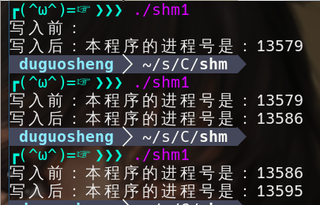
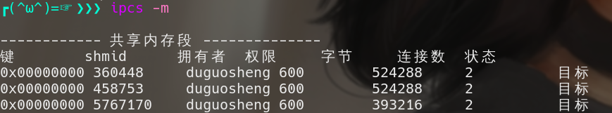
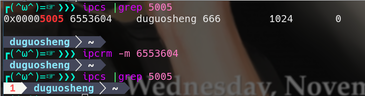

修改自码农有道的博客
进程通信的概念
进程数据空间是相互独立的，不能相互访问的。但某些情况下进程之间需要互相通信，来完成系统的某项功能或交换数据。
进程通信的场景
- 数据传输：一个进程需要将它的数据发送给另一个进程，发送的数据量在一个字节到几兆字节之间。
- 共享数据：多个进程想要操作共享数据，一个进程对共享数据的修改，别的进程应该立刻看到。
- 通知事件：一个进程需要向另一个或一组进程发送消息，通知它（它们）发生了某种事件（如通知进程退出）。
- 进程控制：有些进程希望控制另一个进程的运行。
进程通信的方式
进程通信的方式
- 无名管道（pipe）及有名管道（named pipe）：无名管道可用于具有父进程和子进程之间的通信。有名管道克服了管道没有名字的限制，因此，除具有管道所具有的功能外，它还允许无亲缘关系进程间的通信。
- 信号（signal）：信号用于通知接受进程有某种事件发生。
- 消息队列（message）：消息队列是消息的链接表，进程可以向队列中添加消息，其它的进程则可以读走队列中的消息。
- 共享内存：使得多个进程可以访问同一块内存空间。
- 信号灯（semaphore）：也叫信号量，主要作为进程之间对共享资源加锁的手段。
- 套接字（socket）：可用于不同机器之间的进程间通信。
应用经验
- 管道和消息队列：太过时了，实在没什么应用价值，了解一下即可。
- 信号灯（semaphore）：我有十年没用过了，可能会有用，也是了解一下即可，不必深入学习。
- 信号（signal）：在信号章节中已详细介绍。
- 套接字（socket）：在TCP通讯章节中介绍。
- 共享内存：应用场景不多，但还是有，本章节将介绍它。
共享内存和信号灯的江湖地位本来是很高的，但是，随着网络带宽的增加和内存数据库技术的发展，共享内存的应用场景越来越少。但是，对于大型数据库系统来说，共享内存和信号灯仍极其重要。
socket可以用于不同机器之间的进程通信，完全可以代替只能在同一机器的进程通信的管道和消息队列。
共享内存的概念
共享内存就是允许多个进程访问同一个内存空间。共享内存是在多个进程之间共享和传递数据最高效的方式。操作系统将不同进程之间共享内存安排为同一段物理内存，进程可以将共享内存连接到它们自己的地址空间中，如果某个进程修改了共享内存中的数据，其它的进程读到的数据也将会改变。
共享内存并未提供锁机制，也就是说，在某一个进程对共享内存的进行读写的时候，不会阻止其它的进程对它的读写。如果要对共享内存的读写加锁，我们可以用共享内存自身的标记或信号灯。对普通程序员来说，对共享内存加锁的应用场景并不多见。
共享内存的操作
Linux中提供了一组函数用于操作共享内存，它们声明在头文件 sys/shm.h 中。
shmget函数
shmget函数用来获取或创建共享内存，它的声明为：
1 | int shmget(key_t key, size_t size, int shmflg); |
参数key是共享内存的键值，是一个整数，typedef unsigned int key_t，是共享内存在系统中的编号，不同共享内存的编号不能相同，这一点由程序员保证。key用十六进制表示比较好。
参数size是待创建的共享内存的大小，以字节为单位。
参数shmflg是共享内存的访问权限，与文件的权限一样，0666|IPC_CREAT表示全部用户对它可读写，如果共享内存不存在，就创建一个共享内存。
shmat函数
把共享内存连接到当前进程的地址空间。它的声明如下：
1 | void *shmat(int shm_id, const void *shm_addr, int shmflg); |
参数，shm_id是由shmget函数返回的共享内存标识。
参数shm_addr指定共享内存连接到当前进程中的地址位置，通常为空，表示让系统来选择共享内存的地址。
参数shm_flg是一组标志位，通常为0。
调用成功时返回一个指向共享内存第一个字节的指针，如果调用失败返回-1.
shmdt函数
该函数用于将共享内存从当前进程中分离，相当于shmat函数的反操作。它的声明如下：
1 | int shmdt(const void *shmaddr); |
参数shmaddr是shmat函数返回的地址。
调用成功时返回0，失败时返回-1.
shmctl函数
删除共享内存，它的声明如下：
1 | int shmctl(int shm_id, int command, struct shmid_ds *buf); |
参数shm_id是shmget函数返回的共享内存标识符。
参数command填IPC_RMID。
参数buf填0。
解释一下，shmctl是控制共享内存的函数，其功能不只是删除共享内容，但其它的功能没什么用，所以不介绍了。
注意，用root创建的共享内存，不管创建的权限是什么，普通用户无法删除。
- 示例程序（book255.cpp）
1
2
3
4
5
6
7
8
9
10
11
12
13
14
15
16
17
18
19
20
21
22
23
24
25
26
27
28
29
30
31
32
33
34
35
36
37
38
39
int main()
{
int shmid; //共享内存标识符
//创建共享内存，键值为0x5005, 共1024字节, 全部用户可读可写
if((shmid=shmget((key_t)0x5005, 1024, 0666|IPC_CREAT))==-1)
{
printf("shmat(0x5005)failed\n");
return -1;
}
char *ptext = 0; //用于指向共享内存的指针
//将共享内存连接到当前进程的地址空间，由ptext指针指向它
ptext = (char *)shmat(shmid, 0, 0);
//操作本程序的ptext指针，就是操作共享内存
printf("写入前：%s\n", ptext);
sprintf(ptext, "本程序的进程号是：%d", getpid());
printf("写入后：%s\n", ptext);
//把共享内存从当前进程中分离
shmdt(ptext);
//删除共享内存
/*
if(shmctl(shmid, IPC_RMID, 0)==-1)
{
printf("stmctl(0x5005) failed\n");
return -1;
}
*/
return 0;
}
运行结果

注意，程序第一次运行的时候，共享内存未创建，所以第一次运行程序的时候，共享内存中的内容为空。之后程序每次运行都能获取到上一次程序运行写入的内容。
两个共享内存的操作命令
用ipcs -m可以查看当前用户有读限权的共享内存，内容有键值（key），共享内存编号（shmid），创建者（owner），权限（perms），大小（bytes）。

用ipcrm -m共享内存编号，可以手工删除共享内存，如下：
